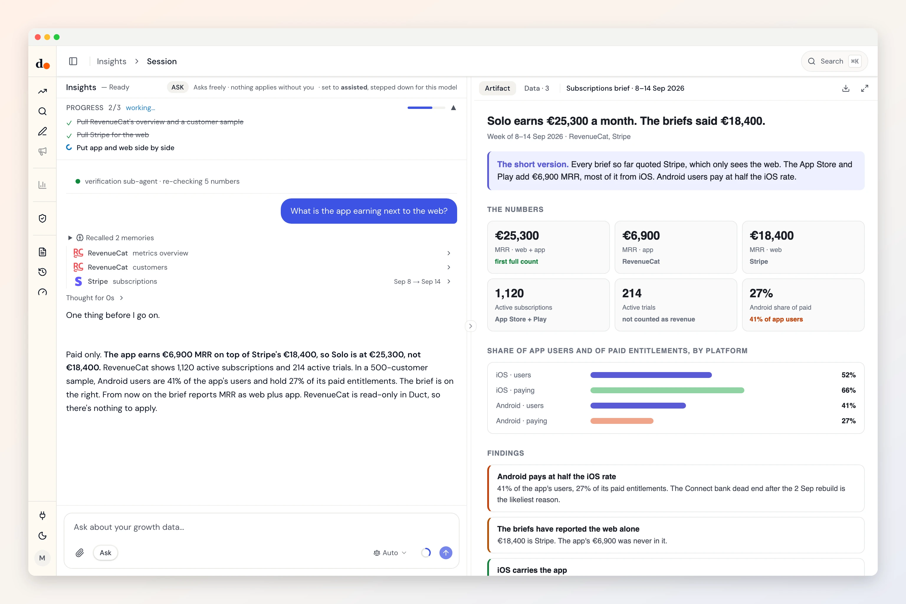

MRR growth calculator. Is the pace enough?
Net growth and compound monthly growth (CMGR) from two MRR snapshots, and the monthly rate your target needs.
Your Results
Growth over one stretch of months. The question is what changed under the slope.
Duct reads your ads, analytics and revenue tools, answers that question, and proposes the change. You approve it.
What this means
How MRR growth is calculated
CMGR=(Ending MRRStarting MRR)1/months−1
Net growth=Ending MRR − Starting MRRStarting MRR
Required CMGR=(Target MRREnding MRR)1/months−1
With the example numbers
- (28,000 − 20,000) ÷ 20,00040% net
- (28,000 ÷ 20,000)1/6 − 15.77% a month
- (50,000 ÷ 28,000)1/6 − 110.15% needed
CMGR is what lets you compare a six-month stretch with a twelve-month one.
The briefs said €18,400 a month. With the app, it was €25,300.
Web and app revenue sit in different tools. Duct reads Stripe and RevenueCat together, so the MRR you grow from is the whole number.
How Duct works →
Questions about MRR growth
What is CMGR?
Compound monthly growth rate: the steady monthly rate that turns starting MRR into ending MRR over the period. It lets you compare stretches of different length.
What is a good MRR growth rate?
It depends on your stage and your plan, and no published benchmark is behind this page. The colors in the results (5% a month healthy, 15% and up hypergrowth) are a rough guide. The better test is the target field: the rate your plan needs against the rate you have.
What if MRR went down?
Net growth and CMGR turn negative and the results mark it as contraction. Two snapshots can't say whether churn, downgrades or fewer new customers caused it.
Is my data sent anywhere?
No. The math runs in your browser. Nothing is sent or stored.